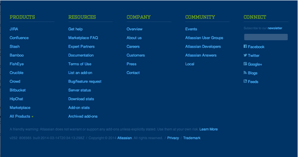

Simplifying the footer
In a prior project, I assessed the Atlassian marketing site’s footer with two other designers. We organized topics in a spike for our internal hackathon as part of a larger project. My team proposed a footer change that eliminated non-essential information. With this background, I decided to evaluate the Marketplace’s footer to see how we could simplify information.
Marketplace footer before

Problems to solve
At the time of implementation, the Marketplace footer was copied directly from the marketing site. Here’s what I discovered, excluding numbers I pulled from Google Analytics:
- A lack of rhyme or reason for link ordering, or what links appear at all. Relevant content was lost in the abyss.
- We were linking to our own site (facepalm).
- Lots of potential misconceptions: “Get help” implied help for the current site, when in reality it’s for the global brand, and social media links had nothing to do with the Marketplace, just the company-level channels.
- Inconsistent styles – sentence case, title case, and tacked-on content at the bottom of columns made this footer feel hacked together.
- Nearly nobody clicked on the footer in the first place.
- Comparative analysis showed sleeker, more utilitarian footers were alive and well on other sites.
My design & implementation
I iterated several times on my design, each time diminishing the number of links in the footer. I worked collaboratively with a team of developers to assess the value and importance of links, and made changes accordingly.
Following my team’s development practices, I raised a pull request to implement the changes and merge to master. Now, our simple footer omits unnecessary links and columns. We only link to the bare essentials, and have seen other Atlassian sites trend toward simplicity.
Lessons learned
If I could do things differently:
- Invest more time in analytics. Engagement numbers didn’t significantly change when we implemented the new footer.
- Be daring, and more liberally remove extraneous content. I went through a few rounds of iteration that I could have avoided if I had gone with my intial design.
- Work with other teams with similar use cases to optimize a consistent footer navigation pattern.